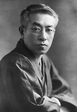

日本の文学
日本を代表する文豪を紹介します
島崎藤村
島崎藤村
夏目漱石
太宰治
夜明け前
木曾路はすべて山の中である。あるところは岨づたいに行く崖の道であり、あるところは数十間の深さに臨む木曾川の岸であり、あるところは山の尾をめぐる谷の入り口である。一筋の街道はこの深い森林地帯を貫いていた。
東ざかいの桜沢から、西の十曲峠まで、木曾十一宿はこの街道に添うて、二十二里余にわたる長い谿谷の間に散在していた。道路の位置も幾たびか改まったもので、古道はいつのまにか深い山間に埋もれた。名高い桟も、蔦のかずらを頼みにしたような危い場処ではなくなって、徳川時代の末にはすでに渡ることのできる橋であった。
新規に新規にとできた道はだんだん谷の下の方の位置へと降って来た。道の狭いところには、木を伐って並べ、藤づるでからめ、それで街道の狭いのを補った。長い間にこの木曾路に起こって来た変化は、いくらかずつでも嶮岨な山坂の多いところを歩きよくした。
年譜
プロフィール
島崎 藤村（しまざき とうそん）。
日本の詩人、小説家。本名は島崎 春樹（しまざき はるき）。作品は父をモデルとした歴史小説の大作『夜明け前』などがある。
